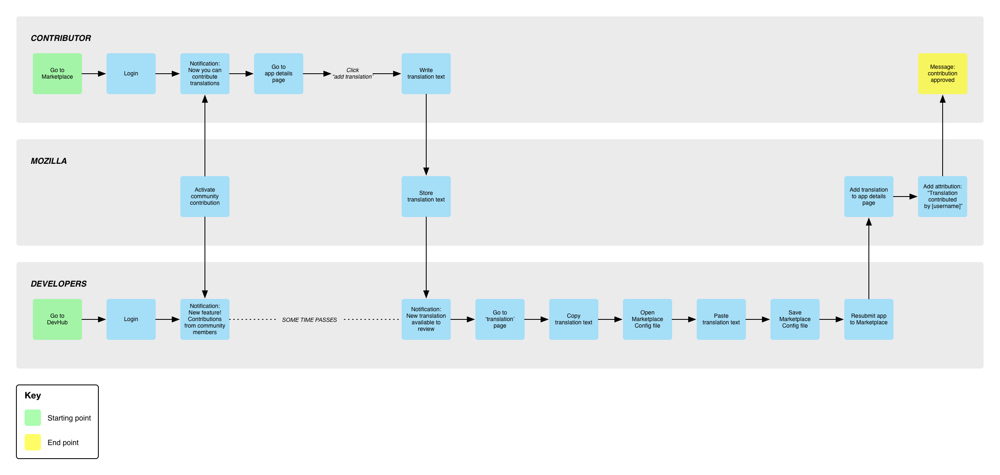

---
layout: MarketplaceUXSpec
multipage: false
---	

<div class="container">
	<h1>Customer Journey Map &rarr; Localise app description</h1>

	<!-- Pagination. If you have more than one page, set the multipage variable in the Frontmatter to true. Editing the pagination code happens in /_includes/homePagination.html. -->
	{% if page.multipage %}
		{% include homePagination.html %}
	{% endif %}

	<div class="col-sm-12 col-md-12 col-lg-12">
	
	  <h2>What is it?</h2>
    
    <p class="longText">The localisation program translates an app’s description to non-English language used by Marketplace users.</p>
    
    <ul class="longText">
	    <li>Developers have the ability to select whether their app description can be translated by the community or should remain in its original language</li>
	    <li>Contributors can specify a language they’d like to localise in</li>
      <li>Mozilla has the ability to track translated app strings</li>
      <li>Developers can approve or reject a proposed translation</li>
	  </ul>
	  
	  <h2>Challenges</h2>
	  
	  <ul class="longText">
	    <li>Translating an app’s content seems to be where the real value lies, but it’s fraught with technical difficulties. A developer might not have the budget or capability to do it, and even with community contribution, there will be thousands of strings to translate for many popular apps that use a lot of words.</li>
	    <li>Reading about an app in my language and then downloading it only to find out the app itself hasn't been localized as well would be a bit of a piss off. Should we only enable translations to app detail pages to apps that have been localized in said language?</li>
	    <li>There are many apps. Where should contributors focus their localisation efforts on? We could have a Top 10 or Top 25 apps be localised, but they tend to be produced by big-name developers, and may be less likely to accept translation strings from our contributors.</li>
	  </ul>
	  
	  <p class="longText">One thing that would be useful to our contributors is the “Most Viewed App Details” page, just like what we do with the localization dashboard. This way, our contributors can see exactly what is being viewed the most, and what needs to be translated first (even though that list will be the same in most countries).</p>
    
    
    
    <h3><a href="concept-localise.html">See concepts</h3>
	  		
	</div>
	
		
